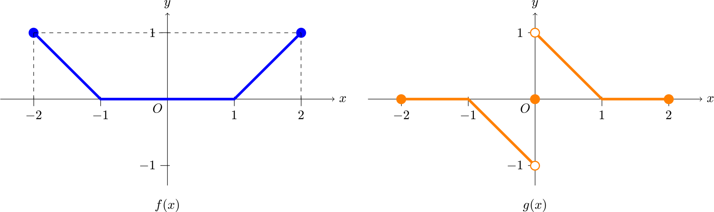

연속의 의미
함수의 연속이란 무엇일까요? 흔히 함수의 연속은 함수가 ‘이어져 있다’고 생각할 수 있습니다. 이 말은 틀리지 않습니다. 원래 ‘연속’이란 ‘이어진 함수’라는 개념을 수학적으로 표현하고자 하는 시도로부터 나온 개념입니다. 정의도 구멍이 난 곳이 없어야 하므로 극한값이 함숫값과 같아야 합니다.
그런데 이러한 정의는 ‘이어져 있다’라는 성질을 완벽히 표현하지는 못합니다. 예를 들어 유리수에서는 를, 무리수에서는 을 함숫값으로 갖는 함수를 생각해보겠습니다. 이 함수는 실수의 성질에 의해 자명하게 모든 점에서 이어져 있지 않습니다. 하지만 에서의 극한값과 함숫값이 모두 이므로 에서 연속의 정의를 만족합니다. 따라서 근방에서 이어져있지 않음에도 불구하고 에서 연속입니다.
많은 경우에 연속함수들은 이어져 있는 모양을 가지며, 고등학교 과정에서 다루지 않는 이러한 특이한 경우를 제외한다면 ‘이어져 있다’라는 개념을 통해 연속함수의 다양한 성질을 손쉽게 유도할 수 있습니다. 예를 들어 연속함수들에 대해서는 덧셈, 뺄셈, 곱셈을 해도 이어져 있다는 것을 어렵지 않게 이해할 수 있습니다. 나아가 분모가 이 아니라면 나눠도 이어져 있으며, 함수만 정의된다면 역함수나 합성에 대해서도 성질이 유지됩니다.
- 도 연속이다.
- 도 연속이다.
- 도 연속이다. (단, )
- 역함수가 존재한다면, 도 연속이다.
- 함수가 잘 정의된다면, 도 연속이다.
하지만 연속함수의 정의가 ‘이어져 있음’을 의미하지 않는다면 연속함수는 왜 배우는 것일까요? 개인적으로 연속함수가 갖는 가장 큰 성질은 정의를 들여다보면 나온다고 생각합니다. 바로 극한과 연속성이 서로 교환될 수 있다는 점이죠.
예를 들어 다항함수, 지수함수, 로그함수, 삼각함수에서의 극한 문제가 나왔다고 해보겠습니다. 여러분들은 이 극한 문제를 어떻게 푸시나요? 교과서에서는 그래프를 그린 후에 가 로 한없이 가까워질 때, 함숫값이 어떤 값을 향해 한없이 가까워지는지 확인하며 극한값을 찾습니다.
하지만 우리는 그렇지 않죠. 아마 무의식적으로 숫자를 대입할 것입니다. 왜 그래도 상관없을까요? 왜냐하면 다항함수, 지수함수, 로그함수, 삼각함수는 모두 연속함수이므로 함수를 무시하고 에 바로 극한을 보낼 수 있기 때문입니다. 다시 말해 연속함수는 극한과 함수가 교환될 수 있는 거죠.
물론 해석학적으로는 가 정의역에서의 집적점인지 따지는 과정이 더 필요하긴 하지만 여기서는 거기까지 다루지는 않겠습니다.
연속 함수와 불연속 함수의 연산
앞서 보았듯 연속함수끼리 연산한다면 연속함수의 성질에 의해 당연하게 연속임을 알 수 있습니다. 그런데 연속함수와 불연속 함수를 연산하면 연속일까요? 아니면 불연속일까요? 만약 일반적으로 연속이거나 불연속이라면 ‘정리’나 ‘성질’로 배웠겠지만 그렇지 않은 것을 보면 불연속 함수와의 연산을 하면 어떻게 되는지는 주어진 함수의 조건에 따라 다르다는 것을 알 수 있습니다. 그렇다면 불연속함수와 연속함수의 연산에서 연속함수가 되는지 판별하는 규칙은 없을까요? 구체적인 예시로 조건을 찾아보겠습니다. 예를 들어 다음과 같이 열린구간 에서 정의된 연속함수 와 불연속 함수 가 있다고 할 때, 두 함수의 곱함수는 연속일까요?

연속함수와 불연속함수의 곱셈
는 에서만 불연속이고 나머지 정의역에서는 연속이므로 두 함수를 곱했을 때 을 제외하면 연속입니다. 그렇다면 에서 연속이라는 것을 어떻게 알 수 있을까요? 가장 정석적인 방법은 정의를 이용하는 것입니다. 우선 에서의 좌극한, 우극한, 함숫값을 보면 는 모두 으로 같습니다. 반면에 는 에서의 좌극한은 , 우극한은 , 함숫값은 입니다. 이때 두 함수의 곱을 물어보았으므로 곱한 결과를 보면 모두 으로 같은 값을 갖습니다.
따라서 두 함수의 곱함수 는 연속함수입니다. 이 결과를 자세히 살펴보면 한 가지 결과를 더 얻을 수 있습니다. 생각해보면 는 연속이므로 에서의 좌극한, 우극한, 함숫값이 모두 같습니다. 반면에 는 불연속이므로, 에서의 좌극한, 우극한, 함숫값 중 적어도 하나는 다른 값을 가집니다. 이때, 두 함수의 곱이 연속이기 위해서는 반드시 두 결괏값의 곱이 항상 같은 값을 가져야 합니다. 그렇다면 서로 다른 값에 같은 값을 곱해서 항상 같은 값을 가지려면 그 같은 값은 얼마여야 할까요? 반드시 이어야 합니다. 따라서 가 불연속인 점에서 의 함숫값이 이면 는 연속입니다.
발산하는 불연속 함수와의 곱셈
난이도를 살짝만 올려보겠습니다. 다음과 같은 문제에서 가 연속이게 하는 다항함수 는 어떤 특징이 있을까요?
함수 에 대하여 함수 가 모든 실수에서 연속이게 하는 다항함수 의 조건을 구해보자.
앞서 배운 대로 이 문제는 곱함수의 연속성을 묻는 질문이므로 가 불연속인 값에 대하여 이라 생각할 수 있습니다. 그런데 앞선 경우에는 의 좌, 우극한값이 존재했지만, 이번 경우에는 발산하므로 인 조건만으로는 부족합니다. 왜냐하면 과 를 연산했을 때 어떤 결과가 나오는지 알 수 없기 때문입니다.
예를 들어 로 둔다면,
입니다. 이 함수는 에서 극한값은 이지만 함숫값은 이므로 불연속입니다. 왜 이런 현상이 일어났는지 본다면 에서 는 차의 속도로 무한대로 발산하고, 는 차의 속도로 으로 수렴하면서 두 속도가 같기에 수렴값을 가지게 되었기 때문입니다. 따라서 그 수렴값이 이 아니므로 좌, 우 극한값과 함숫값이 일치하지 않았고, 결과적으로 연속이 아니게 된 것입니다. 따라서 두 함수의 곱이 연속 즉, 극한값도 으로 수렴하게 만들기 위해서는 가 에서 무한대로 발산하는 속도보다 더 빠른 속도로 가 으로 수렴해야 합니다. 이를 정리하면 이라 할 수 있습니다. 만약 가 다항함수라면 이 이상의 자연수이겠지만, 다항함수라는 조건이 없으면 차보다 빠르게 으로 수렴하게 만들어주는 함수가 모두 가능합니다.
연속함수와 불연속함수의 합성
다음으로 연속함수와 불연속함수를 합성하면 어떻게 될까요? 연속은 교환법칙이 성립하지 않으므로 두 가지 경우가 있습니다. 와 인 경우죠. 이 두 경우에 대해 각각 연속성을 알아보겠습니다. 먼저 인 경우입니다. 우선 이 경우도 정의역이 인 부분을 제외하면 모두 연속이므로, 일 때의 연속성만 알아보면 충분합니다. 우선 정석적인 방법으로 좌, 우극한값과 함숫값이 어떻게 변하는지 관찰해보겠습니다. 에서의 는 에서 접근하고, 이 방향으로 의 극한을 보면 의 극한값은 입니다. 곱함수에서는 특별히 강조하지 않았지만 극한을 보낼 때 주의해야 할 점은 마지막 극한값이 나오기 전까지 모든 함수가 어떻게 움직이는지, 즉 어떤 방향으로 접근하는지 항상 같이 관찰할 필요가 있습니다. 같은 방법으로 에서의 좌극한과 우극한을 보면 모두 이므로 두 함수의 합성함수도 연속임을 알 수 있습니다.
그런데, 곱함수처럼 합성에서도 더 빠르게 판단할 수 있는 방법은 없을까요? 는 연속이므로 앞서 연속함수의 성질에서 보았듯이 를 만족합니다. 따라서 쉽게 생각해 이면 에서 가 연속입니다. 예를 들어 설명하면 그래프에서 불연속일 때의 값들, 즉 에 대해 의 값이 모두 같은지 확인하면 연속성을 빠르게 판단할 수 있습니다.
반대로 는 어떨까요? 에서의 연속성만 본다면, 앞선 방법과 마찬가지로 정석적인 방법으로 연속성을 따지는 것이 가장 일반적입니다.
그러나 모든 점에서의 연속성에 대해 빨리 판단하고 싶다면 그래프를 그려서 전체적으로 판단하면 좋습니다. 합성함수의 그래프를 따라 그린다면 는 연속이므로 가 불연속이 되는 값을 의 치역 즉, 함숫값으로 가지지 않는다면 연속임을 판단할 수 있습니다. 예를 들어, 의 치역은 에서 을 지나 다시 로 이동합니다. 이를 의 정의역에 넣어 보면 에서 으로 갈 때는 연속이지만 인 순간 불연속이 됩니다. 그리고 일 때는 항상 같은 값이므로 연속이었다가, 같은 방법으로 에서 로 이동할 때 다시 불연속이므로 의 불연속점이 두 개라는 것을 그래프를 따라가면서 찾아낼 수 있어야 합니다.
마무리하며
연속함수의 개념은 수학에서 매우 중요한 역할을 합니다. 이는 단순히 함수의 ‘이어져 있음’을 의미하는 것 이상의 의미를 지닙니다. 연속함수를 통해 우리는 극한값과 함수값을 쉽게 교환할 수 있으며, 이를 이용해 복잡한 문제를 보다 간단하게 해결할 수 있습니다.
연속함수와 불연속함수의 조합에서 나타나는 다양한 성질과 예외적인 경우들을 통해 수학의 흥미로운 측면을 발견하고, 이러한 개념들을 바탕으로 더 복잡한 문제를 해결할 수 있는 능력을 기르는 것이 중요합니다. 수학의 여러 개념들이 서로 어떻게 연결되고 상호작용하는지를 이해하는 과정에서 연속성의 개념은 중요한 역할을 합니다.